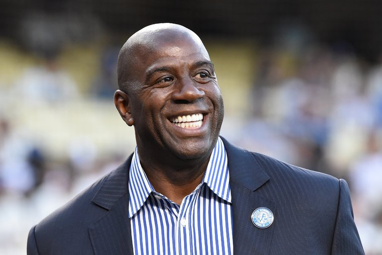

Magic Johnson Has A Bold New Way To Attract Big Name Free Agents
March 2, 2018

LOS ANGELES- Magic Johnson has been under more scrutiny and pressure then most first year general managers. Running the show for a struggling franchise such as the Los Angeles Lakers, that's been so accustomed to winning in the past can lead to a lot of pressure from the public. Now that fans can virtually rally the through social media networks with plees such as #PG2LA or #LA4Bron, the pressure for Magic to land a big name free agent in the off season is gargantuan.
In an interview with ESPN Magazine the former player turned general manager discussed how he could possibly attract some All-Star caliber players to the struggling Lakers franchise. Magic expressed that he was willing to go to extreme measures to attract the elite talent of the league. When pressed for answers, Magic confessed that he intended to “infect LeBron James mother Gloria with the HIV virus and only give him the antidote after he signed with the team.” Because Magic is seemingly the only person in the world with an HIV cure, it seems like he'll be holding a lot of persuasive power this off-season.
This bold strategy has already showed promise as mere minutes after the article was released, a weeping LeBron called the Lakers office begging for a contract offer. The 6'8 small forward is quoted saying "I'll do whatever you want, just please don't hurt my family." Looks like Earvin still has a little basketball Magic left in his Johnson.